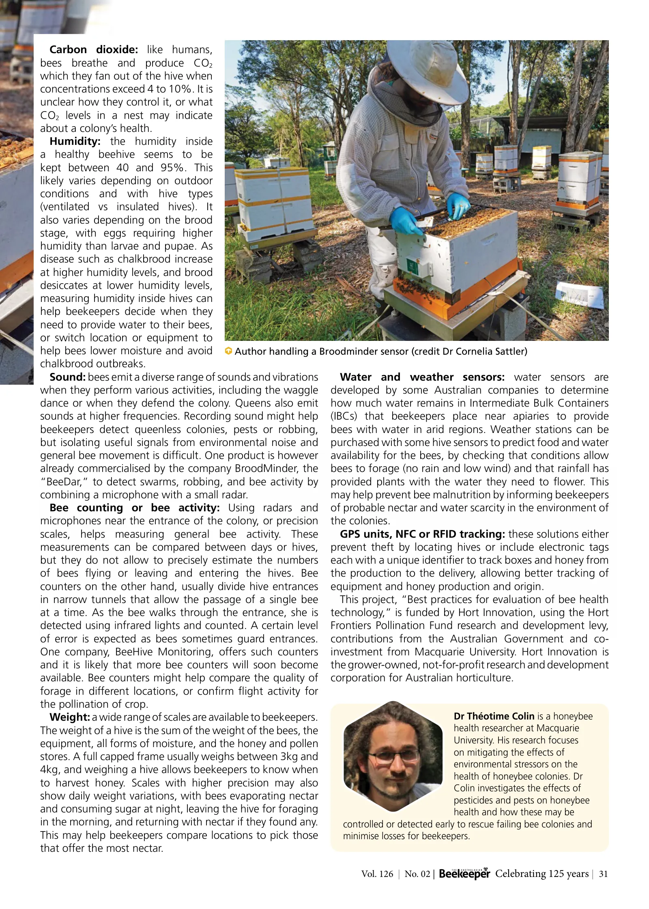

Carbon dioxide: like humans,
bees breathe and produce CO2
which they fan out of the hive when
concentrations exceed 4 to 10%. It is
unclear how they control it, or what
CO2 levels in a nest may indicate
about a colony’s health.
Humidity: the humidity inside
a healthy beehive seems to be
kept between 40 and 95%. This
likely varies depending on outdoor
conditions and with hive types
(ventilated vs insulated hives). It
also varies depending on the brood
stage, with eggs requiring higher
humidity than larvae and pupae. As
disease such as chalkbrood increase
at higher humidity levels, and brood
desiccates at lower humidity levels,
measuring humidity inside hives can
help beekeepers decide when they
need to provide water to their bees,
or switch location or equipment to
help bees lower moisture and avoid
chalkbrood outbreaks.
Sound: bees emit a diverse range of sounds and vibrations
when they perform various activities, including the waggle
dance or when they defend the colony. Queens also emit
sounds at higher frequencies. Recording sound might help
beekeepers detect queenless colonies, pests or robbing,
but isolating useful signals from environmental noise and
general bee movement is difficult. One product is however
already commercialised by the company BroodMinder, the
“BeeDar,” to detect swarms, robbing, and bee activity by
combining a microphone with a small radar.
Bee counting or bee activity: Using radars and
microphones near the entrance of the colony, or precision
scales, helps measuring general bee activity. These
measurements can be compared between days or hives,
but they do not allow to precisely estimate the numbers
of bees flying or leaving and entering the hives. Bee
counters on the other hand, usually divide hive entrances
in narrow tunnels that allow the passage of a single bee
at a time. As the bee walks through the entrance, she is
detected using infrared lights and counted. A certain level
of error is expected as bees sometimes guard entrances.
One company, BeeHive Monitoring, offers such counters
and it is likely that more bee counters will soon become
available. Bee counters might help compare the quality of
forage in different locations, or confirm flight activity for
the pollination of crop.
Weight: a wide range of scales are available to beekeepers.
The weight of a hive is the sum of the weight of the bees, the
equipment, all forms of moisture, and the honey and pollen
stores. A full capped frame usually weighs between 3kg and
4kg, and weighing a hive allows beekeepers to know when
to harvest honey. Scales with higher precision may also
show daily weight variations, with bees evaporating nectar
and consuming sugar at night, leaving the hive for foraging
in the morning, and returning with nectar if they found any.
This may help beekeepers compare locations to pick those
that offer the most nectar.
Water and weather sensors: water sensors are
developed by some Australian companies to determine
how much water remains in Intermediate Bulk Containers
(IBCs) that beekeepers place near apiaries to provide
bees with water in arid regions. Weather stations can be
purchased with some hive sensors to predict food and water
availability for the bees, by checking that conditions allow
bees to forage (no rain and low wind) and that rainfall has
provided plants with the water they need to flower. This
may help prevent bee malnutrition by informing beekeepers
of probable nectar and water scarcity in the environment of
the colonies.
GPS units, NFC or RFID tracking: these solutions either
prevent theft by locating hives or include electronic tags
each with a unique identifier to track boxes and honey from
the production to the delivery, allowing better tracking of
equipment and honey production and origin.
This project, “Best practices for evaluation of bee health
technology,” is funded by Hort Innovation, using the Hort
Frontiers Pollination Fund research and development levy,
contributions from the Australian Government and co-
investment from Macquarie University. Hort Innovation is
the grower-owned, not-for-profit research and development
corporation for Australian horticulture.
Author handling a Broodminder sensor (credit Dr Cornelia Sattler)
Dr Théotime Colin is a honeybee
health researcher at Macquarie
University. His research focuses
on mitigating the effects of
environmental stressors on the
health of honeybee colonies. Dr
Colin investigates the effects of
pesticides and pests on honeybee
health and how these may be
controlled or detected early to rescue failing bee colonies and
minimise losses for beekeepers.
Vol. 126 | No. 02 |
Celebrating 125 years | 31